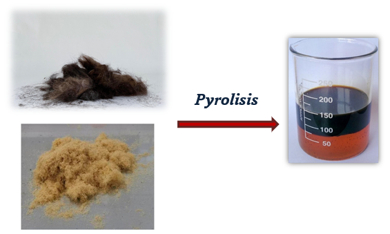

Turning Hair Waste into Clean Energy
We're transforming an overlooked waste—human hair—into clean, sustainable biodiesel to tackle both environmental pollution and the global energy crisis.
Learn About Our Process200+
Salons Partnered
150
Tons of Hair Recycled
100%
Sustainable Process
Our Mission
At HairX, we've developed a unique process to convert human hair waste collected from salons into clean biodiesel, turning a global waste problem into a sustainable energy solution.
